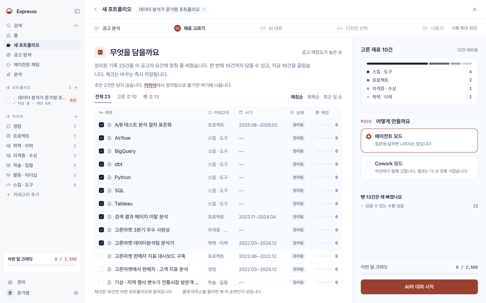
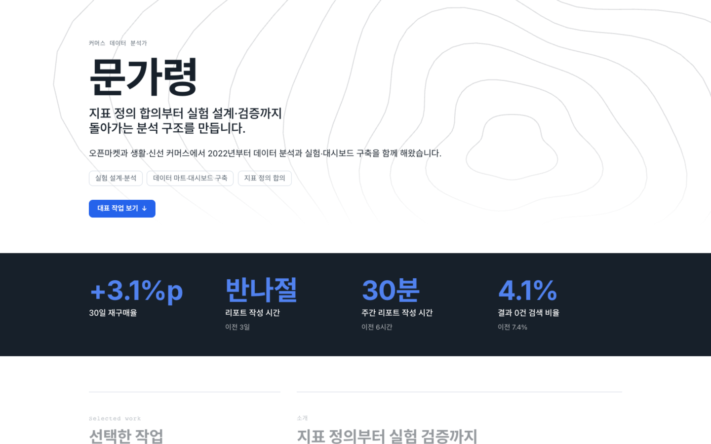
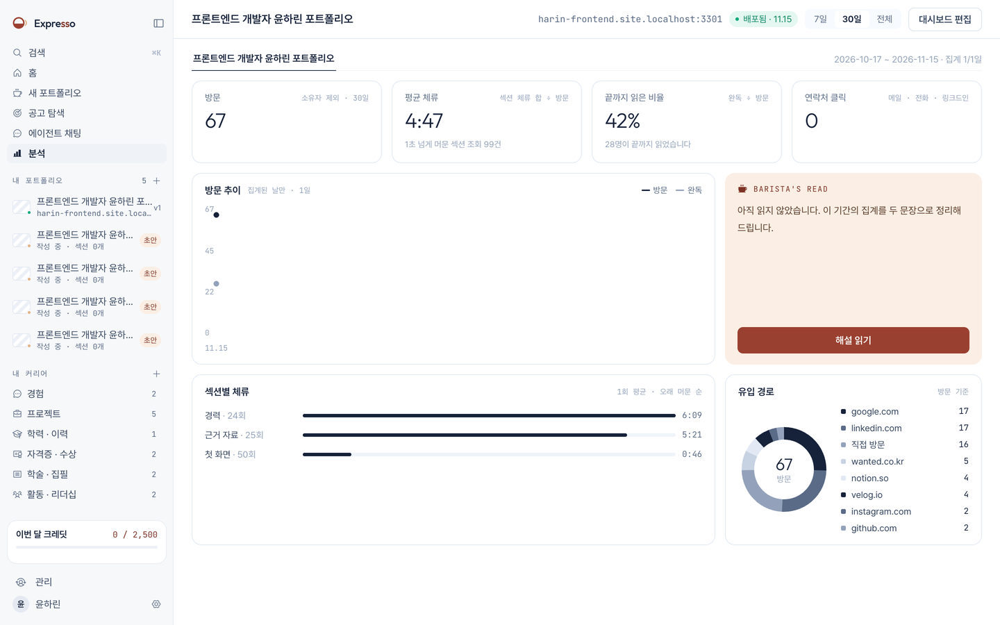

구직 목표 파악
대화로 희망 직무와 근무지,
취업 시기를 묻고 저장합니다.
취업 시기를 묻고 저장합니다.
지원하는 회사마다 반복되는 포트폴리오 제작
기존 서비스의 지원 범위와 Expresso의 지원 범위
커리어 기록과 채용 공고에서 공고 맞춤 포트폴리오까지
커리어 기록에서 방문 분석까지의 사용자 흐름
클라이언트 · API 서버 · Worker · 저장소 · 외부 서비스
기능별 처리 모델 구분
교사 LLM 판정으로 학습한 두 모델의 순위 품질
사전 계획의 마일스톤과 실제 수행한 버전
서비스 흐름 순서의 담당 도메인
11-14 · 설계서 열 단계의 운영 환경 동작






설계서 성능평가지표의 목표치와 측정치
GUI 기반 포털식 플랫폼 · 서로 이어지지 않는 세 기능
분절된 기능의 채팅 기반 단일 인터페이스 통합
Expresso Agent의 도움으로 만든 구조
11-17 ~ 11-22 · 버전별 Expresso Agent의 역할 확대
개발 과정의 문제와 해결
지원 준비 · 경험 정리 · 배포 이후